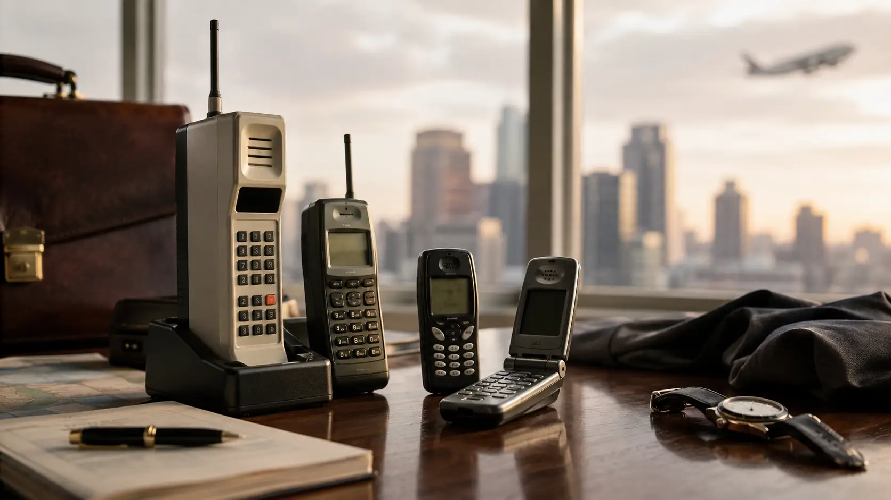
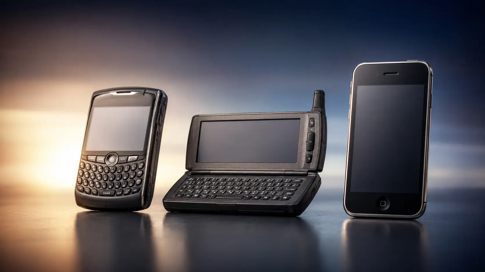
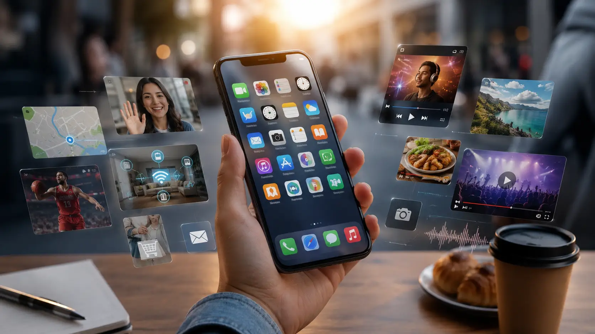
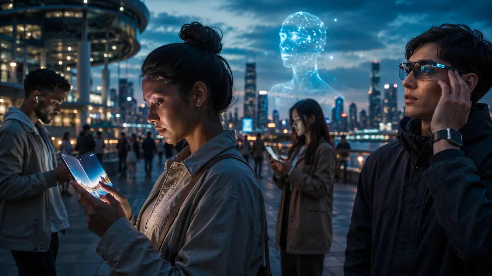

1. Before Smartphones: When Mobile Phones Were Just Phones
Today, checking a phone can mean almost anything. We use it to read the news, take photographs, watch videos, navigate unfamiliar streets, send money, answer emails, order food, play games, listen to music or talk to someone on the other side of the planet. Calling another person — the original purpose of the mobile phone — has become just one function among dozens.
For most of the history of mobile communication, however, things were very different.
The earliest mobile phones were built around a simple but revolutionary idea: allowing people to make and receive telephone calls without being physically connected to a landline. That alone was remarkable. For generations, making a phone call meant being somewhere a telephone happened to be. Mobile technology began breaking that connection between communication and location.
The first commercial cellular networks appeared around the beginning of the 1980s, and the phones designed for them looked nothing like the slim devices we carry today. Early handheld models were large, heavy and extremely expensive. Batteries offered limited talk time, coverage was far from universal, and owning a mobile phone was often associated with wealthy businesspeople, executives and professionals who had a particular need to remain reachable while traveling.
These devices were sometimes nicknamed “brick phones” for good reason. Their size and weight made them difficult to carry compared with modern phones, but their importance had little to do with elegance. For the first time, a telephone number could effectively travel with its owner.
During the 1990s, mobile phones became smaller, cheaper and increasingly accessible to ordinary consumers. Digital cellular networks improved call quality and capacity, while manufacturers experimented with more compact designs, longer battery life and increasingly distinctive models. The mobile phone gradually changed from a specialist business tool into a mass-market consumer product.
And then something unexpected happened: people discovered that phones did not necessarily have to be used for speaking.
Text messaging became one of the first major clues about what mobile devices could eventually become. SMS allowed short written messages to travel through cellular networks, turning the phone into a simple form of portable digital communication. Keypads designed primarily for dialing numbers suddenly became tools for writing conversations.
It may seem primitive today, but texting represented an important change in behavior. People could communicate silently, asynchronously and in situations where making a phone call was inconvenient. Entire habits and social conventions developed around the tiny messages displayed on monochrome screens.
Manufacturers soon began adding other small features. Phones acquired digital contact books, calendars, alarms, calculators and simple games. Some models allowed users to change ringtones or customize their appearance. None of these features seemed revolutionary individually, but together they suggested something much larger.
The mobile phone was beginning to absorb the functions of other objects.
At the same time, separate technologies were developing rapidly. Personal digital assistants such as the PalmPilot gave professionals portable calendars, notes and contact management. Laptop computers provided mobile access to increasingly sophisticated software. Digital cameras were replacing film for many consumers. Portable music players were changing how people carried their music collections. GPS navigation devices were beginning to guide drivers.
At this stage, however, most of these technologies existed as separate products.
Someone traveling in the late 1990s or early 2000s might realistically carry a mobile phone for calls, a digital camera for photographs, a portable music player for entertainment, a PDA for appointments and perhaps a laptop for email or internet access. Each device solved a different problem.
The technological revolution that followed would come largely from combining those problems into a single machine.
Long before the word “smartphone” became an everyday term, engineers and manufacturers were already asking a transformative question: what would happen if a mobile phone could become something closer to a computer?
That question would eventually change far more than the telephone industry.
It would change the way billions of people live.
2. The First Devices That Tried to Become Computers
Long before the modern smartphone existed, technology companies were already trying to combine the telephone with the growing power of personal computing.
The challenge was not simply making a mobile phone smaller or adding more buttons. Engineers were attempting something much more ambitious: creating a device that could handle communication, information and basic computing while still being portable enough to carry every day.
One of the earliest major examples was the IBM Simon Personal Communicator.
Introduced commercially in 1994, the Simon is often described as one of the first true smartphones, even though the word itself was not yet commonly used. It could make and receive calls, but it also included functions that were unusual for a mobile phone at the time: a calendar, address book, notes, email capabilities and even a touchscreen operated with a stylus.
By modern standards, it was extremely limited. It was bulky, expensive, had short battery life and lacked anything resembling today's mobile internet experience. Yet conceptually, the Simon was surprisingly close to the devices that would dominate the world decades later.
It treated the phone not as a single-purpose communication tool, but as a platform.
Other manufacturers soon began exploring similar ideas.
During the second half of the 1990s, Nokia became one of the most important companies pushing mobile phones toward computing. The Nokia 9000 Communicator, released in 1996, looked almost like two devices joined together. When closed, it resembled a large mobile phone. When opened, it revealed a physical keyboard and a wider display designed for email, documents, contacts and basic internet functions.
For business users, this was extraordinary.
A person could theoretically carry something resembling a miniature office in a pocket or briefcase. Email no longer had to wait until someone returned to a desktop computer. Contacts, appointments and documents could travel with the user. Mobile communication was beginning to overlap with productivity.
At roughly the same time, personal digital assistants were becoming increasingly popular.
Devices such as the PalmPilot were not phones, but they demonstrated something essential about the future of mobile computing: people were willing to organize large parts of their lives using a small digital device. Calendars, contact lists, notes and tasks could all be stored electronically and carried everywhere.
The logical next step was obvious.
Why carry a phone and a PDA separately if they could become the same device?
Throughout the late 1990s and early 2000s, companies experimented with different answers. Some devices emphasized physical keyboards. Others relied on styluses and touchscreens. Some focused heavily on email, while others attempted to provide limited web browsing. Operating systems such as Palm OS, Symbian and Microsoft's early mobile software helped transform phones from relatively fixed electronic products into devices capable of running increasingly sophisticated applications.
But these early smartphones still had major limitations.
Mobile internet connections were slow. Screens were small. Browsers often displayed simplified versions of websites. Software installation could be complicated. Interfaces varied dramatically between manufacturers, and many devices were designed primarily for professionals rather than ordinary consumers.
Even the concept of a touchscreen was very different from what people know today.
Many early touch-enabled devices used resistive screens that worked best with a stylus or deliberate pressure. They were useful for selecting menus and entering information, but they did not yet offer the smooth gestures, responsive scrolling and intuitive interaction that would later make touchscreens feel natural.
The industry also had no universally accepted vision of what a smartphone should actually be.
Should it look like a traditional phone with smarter software?
Should it resemble a miniature computer?
Should it use a keyboard, a stylus or both?
Should it be designed primarily for business users, or could ordinary consumers eventually want one too?
For years, manufacturers tried different combinations.
Some ideas disappeared. Others became surprisingly durable. Email, calendars, internet access, downloadable software, contact synchronization and mobile productivity all existed before the smartphone revolution that most people remember today.
That distinction matters.
The modern smartphone was not invented in a single moment. It emerged from years of experiments in which companies slowly discovered which parts of the computer could successfully be moved into a handheld device.
By the early 2000s, many of the essential ingredients were already available.
The phone could communicate. It could store information. It could access the internet. It could run software. It could organize a person's digital life.
What was still missing was a device capable of combining all of those ideas in a way that millions of ordinary people would actually want to use.
Before that transformation arrived, however, another type of device would become the symbol of the early smartphone era.
And for a time, its name was almost synonymous with mobile email: BlackBerry.
3. BlackBerry and the Rise of the Always-Connected Phone
Before smartphones became universal consumer devices, one brand demonstrated how powerful constant mobile connectivity could be.
That brand was BlackBerry.
Developed by the Canadian company Research In Motion, better known as RIM, BlackBerry devices became especially popular during the early 2000s. Their defining feature was not a large touchscreen, an advanced camera or entertainment software. It was something that now seems completely ordinary:
email everywhere.
For business professionals, this was transformative.
Instead of returning to an office, opening a laptop or waiting until they reached a desktop computer, users could receive and answer messages almost immediately from a handheld device. BlackBerry's push email system delivered messages directly to the phone, helping create the expectation that digital communication could follow a person wherever they went.
That expectation would eventually become one of the defining characteristics of the smartphone era.
BlackBerry devices were instantly recognizable. Many models featured relatively small screens positioned above compact physical QWERTY keyboards. The tiny keys allowed experienced users to type surprisingly quickly, and for people who spent much of their day answering emails, the design was enormously practical.
The devices became particularly popular among executives, government officials, journalists and professionals who needed reliable communication while away from their desks.
For a time, carrying a BlackBerry was almost a symbol of professional status.
But its importance went beyond business.
BlackBerry Messenger, commonly known as BBM, showed how mobile phones could create their own social communication ecosystems. Users could exchange instant messages directly between BlackBerry devices, share status updates and communicate using unique PIN identifiers.
Years before WhatsApp, iMessage and many of today's messaging platforms became dominant, BBM was already demonstrating how powerful instant mobile communication could be.
For many users, this created a new kind of relationship with the phone.
The device was no longer something checked occasionally when someone called or sent a text message. Emails and instant messages could arrive constantly. A small flashing notification light could signal that someone somewhere wanted your attention.
Connectivity was becoming continuous.
This change was so noticeable that BlackBerry devices acquired an unusual nickname: the “CrackBerry,” a reference to how difficult some users found it to stop checking them. The term was humorous, but it pointed toward a behavior that would later become familiar to billions of smartphone owners.
The phone was beginning to demand attention even when nobody was calling.
BlackBerry also helped establish another important idea: security mattered.
Its communication infrastructure and enterprise software gave companies and government organizations greater control over mobile email and corporate data. This reputation for secure communication helped BlackBerry dominate parts of the professional market and made the platform especially attractive to large organizations.
At its peak, BlackBerry seemed exceptionally well positioned for the future.
It had mobile email, messaging, internet access, downloadable applications and millions of loyal users. It had successfully combined communication and productivity in a device small enough to carry almost anywhere.
Yet its greatest strengths would eventually become part of its problem.
BlackBerry had perfected a world in which smartphones were primarily communication and productivity tools operated through physical keyboards. The next major shift would imagine the device very differently.
Instead of asking how to make email and messaging better on a phone, another company would ask what happened if most of the phone's surface became a screen.
That change would dramatically expand what a smartphone could be used for.
When Apple introduced the iPhone in 2007, it did not invent every technology inside it. Touchscreens, mobile internet, email, cameras and smartphone software had all existed before.
What changed was the way those technologies were brought together.
The smartphone was about to stop looking like a miniature office machine.
It was about to become something designed for almost everyone.

4. 2007: The iPhone Changes the Rules
On January 9, 2007, Steve Jobs walked onto a stage in San Francisco and introduced a device that would change the direction of the mobile industry.
Apple called it the iPhone.
At first glance, the announcement seemed to combine several existing ideas. Mobile phones already existed. Touchscreens already existed. Portable music players already existed. Phones could already access email and the internet. Cameras were becoming common, and companies such as BlackBerry, Nokia and Palm had already built increasingly sophisticated mobile devices.
The iPhone's breakthrough was not that every individual component was completely new.
It was the way Apple combined them.
Jobs presented the device as three products in one: a widescreen iPod with touch controls, a mobile phone and an internet communicator. Instead of using a physical keyboard or stylus, the iPhone relied almost entirely on a large capacitive touchscreen controlled directly with the user's fingers.
That decision transformed the relationship between people and mobile software.
Previous smartphones often surrounded small displays with permanent buttons and keyboards. Apple removed most of that physical interface and allowed the screen itself to change depending on what the user was doing. A keyboard could appear when typing and disappear when it was no longer needed. Photos could occupy the full display. Web pages could be moved, enlarged and explored through gestures.
One of the most important innovations was multi-touch.
Users could scroll naturally with a finger, swipe through content and pinch the screen to zoom. Today these gestures are so familiar that they barely attract attention, but in 2007 they made interacting with a handheld computer feel dramatically more intuitive.
The web experience was equally important.
Many earlier mobile phones provided simplified or awkward versions of internet browsing. The iPhone attempted to display websites much more like a desktop computer did, allowing users to navigate pages visually rather than through heavily reduced mobile interfaces.
For the first time, the idea of carrying a usable version of the wider internet in a pocket began to feel convincing to mainstream consumers.
The original iPhone was far from perfect.
It initially lacked several features that existing phones already offered. It supported relatively slow cellular data compared with emerging 3G devices, had no official third-party App Store at launch, did not include copy and paste, and its camera was modest even by contemporary standards. It was also expensive and initially available only through limited carrier arrangements.
But those limitations did not prevent the device from changing expectations.
People began looking at phones differently.
The size and quality of the screen became much more important. Physical keyboards suddenly looked less essential. Software interfaces became central to the experience. Web browsing, photos, music and email could all feel like parts of one coherent device rather than separate features attached to a telephone.
Competitors quickly took notice.
The industry began accelerating toward larger touchscreens and more flexible operating systems. Companies that had spent years refining traditional keypad phones suddenly faced a new question: could the old design philosophy survive in a world where the screen itself had become the main interface?
Apple's next major step would make the impact even greater.
In 2008, the company launched the App Store, allowing third-party developers to distribute software directly to iPhone users through a centralized marketplace. This transformed the phone from a device with a fixed collection of functions into something that could continuously gain new abilities.
A smartphone could now become almost whatever its software allowed.
Need a flashlight? An app could do it.
Need directions, banking, language translation, photo editing, exercise tracking, music identification or a taxi? Software developers could build tools for all of them.
This was a fundamental shift.
For most of the history of consumer electronics, the manufacturer largely determined what a device could do. The smartphone changed that relationship. After purchase, users could continue adding entirely new capabilities created by companies and developers around the world.
The value of the phone increasingly came not only from its hardware, but from the ecosystem surrounding it.
That ecosystem also created an enormous new digital economy. Developers could reach millions of users without manufacturing a physical product or negotiating shelf space in traditional stores. Entire companies would eventually be built around applications that existed primarily on smartphones.
The iPhone therefore did more than introduce a successful new phone.
It helped establish a new model for personal technology: a powerful touchscreen computer, permanently connected to the internet, whose capabilities could expand through software.
But Apple alone would not make smartphones universal.
For that to happen, the technology needed to spread across manufacturers, price ranges and markets around the world.
And that is where Android would become essential.
5. Android Takes Smartphones to the Masses
If the iPhone helped redefine what a smartphone could be, Android helped make that new idea available on an enormous scale.
Google had acquired Android Inc. in 2005, two years before the first iPhone reached consumers. The project was originally conceived as a mobile operating system, but the rapidly changing phone industry forced Google and its partners to rethink what the platform needed to become.
In November 2007, Google announced the Open Handset Alliance, a group of technology and mobile companies created around the development of an open mobile platform based on Android.
The first commercial Android phone arrived in 2008.
Known as the HTC Dream in many markets and the T-Mobile G1 in the United States, it looked very different from today's Android devices. It combined a touchscreen with a slide-out physical keyboard and offered features such as web browsing, email, Google Maps and access to downloadable applications.
It was not the device that would define Android forever.
But it introduced the model that would.
Unlike Apple's approach, in which one company tightly controlled both the iPhone hardware and its operating system, Google made Android available to many different manufacturers. Companies could build their own phones around the platform, customize parts of the experience and compete across different designs and price ranges.
That decision had enormous consequences.
Samsung, HTC, Motorola, LG, Sony and many other manufacturers began producing Android smartphones. Instead of consumers choosing between a small number of expensive devices, the market gradually filled with phones of almost every imaginable size, specification and price.
Some were flagship devices packed with the newest technology.
Others were inexpensive models designed for people buying their first smartphone.
This diversity became one of Android's greatest strengths.
The smartphone revolution could no longer remain concentrated among wealthy consumers or technology enthusiasts. As manufacturing improved and component prices declined, affordable Android phones began reaching enormous populations across Asia, Latin America, Africa and other regions where expensive premium devices were less accessible.
For millions of people, a smartphone would eventually become their first meaningful connection to the internet.
That distinction is important.
In many wealthier countries, the internet had originally been experienced mainly through desktop and laptop computers before smartphones arrived. But in parts of the developing world, the progression was different. Many users moved directly from basic mobile phones to internet-connected smartphones without ever owning a personal computer.
The smartphone was not simply making the internet portable.
It was becoming the internet for a huge portion of humanity.
Android also accelerated competition.
Manufacturers constantly tried to distinguish their devices through better cameras, larger screens, faster processors, improved batteries and new features. Some experimented with styluses, curved displays, unusual form factors or rugged designs. Others focused almost entirely on delivering capable smartphones at increasingly low prices.
This competition pushed mobile technology forward at remarkable speed.
Features that initially appeared only on expensive flagship phones often became common in mid-range and budget models within a few years. High-resolution displays, multiple cameras, fingerprint readers, fast charging and other technologies gradually spread downward through the market.
At the same time, Google's services became deeply integrated into the mobile experience.
Search, Gmail, Maps, YouTube and other internet tools could travel with users everywhere. The phone increasingly became the point where digital services, physical location and personal identity came together.
Android's application ecosystem expanded rapidly as well. What began as Android Market later became Google Play, offering users a centralized place to discover and install software. Developers could create applications for a global audience using devices manufactured by many different companies.
The result was a powerful feedback loop.
More Android users attracted more developers.
More applications made Android devices more useful.
More manufacturers created more phones.
And greater competition helped lower prices, bringing even more users into the ecosystem.
By the early 2010s, smartphones were no longer a niche category competing with traditional mobile phones.
They were replacing them.
Stores that had once been filled with flip phones, compact keypad models and experimental designs increasingly became dominated by rectangular touchscreen devices. The basic visual language introduced during the smartphone transition — a large display, relatively few physical buttons and software-driven controls — became the standard across the industry.
Apple and Android followed very different strategies, but together they established the two ecosystems that would dominate modern mobile computing.
Their rivalry also helped accelerate innovation.
Each new generation brought faster processors, better screens, improved cameras, more capable operating systems and increasingly sophisticated applications. Features introduced by one company were quickly answered, adapted or improved by others.
But the hardware competition was only part of the transformation.
The truly revolutionary change was happening inside those screens.
Once billions of people carried programmable, internet-connected computers everywhere they went, developers could build services for situations that had previously been impossible to reach.
The smartphone was about to become more than a product.
It was becoming a platform.
And the app revolution would reshape almost everything people expected their phones to do.
6. The App Revolution: When Phones Could Become Almost Anything
The hardware made smartphones possible.
The apps made them indispensable.
Early mobile phones came with a fixed collection of functions chosen by the manufacturer. A device might include a calculator, calendar, alarm clock, contact book or a few simple games, but users had relatively little control over what else their phones could become.
Smartphones changed that relationship completely.
Once mobile operating systems allowed third-party developers to create and distribute software at enormous scale, the phone stopped being a finished product. Instead, it became a platform that could continuously acquire new abilities long after it left the factory.
Apple's App Store, launched in July 2008, became one of the most important moments in that transformation. At launch, it offered around 500 third-party applications. The number quickly expanded as developers realized they now had a direct route to millions of potential customers carrying increasingly powerful computers in their pockets.
Google's Android ecosystem developed along a similar path. Android Market, later renamed Google Play, allowed software to spread across devices made by many different manufacturers.
Suddenly, the usefulness of a smartphone depended less on what came preinstalled and increasingly on what the user chose to add.
That simple change had enormous consequences.
A phone could become a flashlight, scanner, compass, calculator, language translator or notebook. It could identify songs, edit photographs, track exercise, monitor expenses, provide weather forecasts or help someone learn a new language.
Many of these tasks previously required separate devices, specialized software or access to a desktop computer.
Now they could happen almost instantly.
More importantly, smartphones gave software something traditional computers rarely possessed: continuous awareness of the physical world around the user.
A phone could know approximately where it was through GPS. It contained cameras and microphones. Accelerometers could detect movement and orientation. Later devices added gyroscopes, fingerprint sensors, biometric authentication, NFC and other technologies.
Developers could combine those capabilities in ways that desktop software could not easily reproduce.
The result was an entirely new generation of services built around mobility.
Navigation applications could calculate routes based on a user's current position. Transportation services could connect passengers with nearby drivers. Banking apps allowed people to manage money without visiting a branch. Airlines could place boarding passes directly on a phone. Restaurants and stores could accept orders without requiring customers to make a traditional phone call.
Some of these developments touched industries far beyond technology, but their common foundation was the smartphone itself: a connected computer that people carried almost everywhere.
The app economy also lowered barriers for software creators.
Before smartphones, distributing consumer software often meant selling physical media, convincing retailers to stock a product or persuading users to download programs from individual websites. App stores created centralized marketplaces where a developer working from almost anywhere could potentially reach an international audience.
That opportunity produced spectacular successes.
Small applications sometimes grew into companies worth billions of dollars, while established businesses were forced to create mobile services simply because customers increasingly expected them. Entire business models emerged around subscriptions, advertising, digital purchases and services delivered through apps.
The smartphone home screen gradually became a gateway to everyday life.
Communication, transportation, banking, shopping, photography, productivity, entertainment and countless other activities could all begin with the same gesture: tapping an icon.
But the revolution was not entirely positive.
As apps competed for attention, notifications became increasingly aggressive. Many services were designed to encourage frequent checking, prolonged engagement or continuous interaction. The convenience of having everything available in one place also made it easier for the smartphone to occupy more and more of a person's day.
That consequence would become increasingly important later.
For now, however, the crucial transformation was clear.
People no longer bought a phone merely because of what the device could do on the day they purchased it.
They bought access to an ecosystem.
And because software could constantly reinvent the same piece of hardware, smartphones began replacing an extraordinary number of separate tools.
One of the most visible examples would be something people had carried for generations in another form.
Buttons.
For more than a century, machines had been designed around physical controls that never changed. Smartphones would popularize a very different idea: a piece of glass whose controls could transform instantly depending on what the user wanted to do.
The touchscreen was about to change not only the phone, but the way humans interacted with technology itself.

7. How Touchscreens Changed the Way We Use Technology
For decades, most electronic devices were built around physical controls.
Telephones had number pads. Computers had keyboards and mice. Cameras had dedicated buttons and dials. Music players used mechanical or electronic controls that stayed in the same place regardless of what the device was doing.
Smartphones introduced a radically different idea to hundreds of millions of people:
the controls themselves could change.
A touchscreen does not need a permanent button for every function. The same area of glass can display a keyboard one moment, a camera shutter the next, and a map, game controller, editing tool or video player seconds later.
That flexibility became one of the smartphone's greatest advantages.
Touchscreens were not invented for smartphones. Various forms of touch-sensitive displays had existed for decades, and touchscreen devices appeared in industrial systems, kiosks, personal digital assistants and early mobile computers long before the modern smartphone era.
But smartphones transformed touch from a specialized input method into one of the most common ways humans interact with computers.
The difference was particularly noticeable when capacitive multi-touch displays became widespread.
Earlier handheld devices often used resistive touchscreens that responded to pressure and were commonly operated with a stylus. They could be precise, but interacting with them often felt more like operating a small computer interface than directly manipulating digital objects.
Modern capacitive screens changed that experience.
Users could tap buttons with a finger, swipe between screens, drag objects, scroll through lists and use multiple fingers simultaneously. Actions such as pinching two fingers together to zoom out or spreading them apart to zoom in quickly became intuitive gestures understood by people who had never studied a manual.
That simplicity mattered enormously.
Traditional computers required users to understand several layers of abstraction. A mouse moved a pointer across a screen, and that pointer interacted with digital objects. Touchscreens removed part of that separation.
Want to move something?
Touch it and drag it.
Want to see the next photograph?
Swipe it away.
Want to enlarge a map?
Spread your fingers across the screen.
The digital object appeared to respond directly to the human hand.
This made smartphones considerably easier for many first-time computer users to understand. Children could interact with touchscreens before they were able to type. Older adults who had rarely used traditional computers could navigate applications by tapping recognizable icons. The smartphone helped bring computing to populations that had never become comfortable with keyboards, mice and desktop operating systems.
Touch also gave software designers unprecedented flexibility.
On a physical keyboard, every key occupies permanent space whether it is currently useful or not. On a touchscreen, the interface can transform completely.
Open a calculator and the screen becomes a numeric keypad.
Open a messaging app and it becomes a keyboard.
Open a camera and it becomes a viewfinder.
Open a drawing application and it becomes a canvas.
The same hardware surface can imitate dozens of different control systems because software determines what appears on it.
That adaptability helped smartphones replace other devices.
Manufacturers no longer needed to add a physical button for every possible feature. Developers could introduce entirely new forms of interaction through software without changing the phone itself.
The consequences eventually extended far beyond phones.
After consumers became comfortable tapping, swiping and pinching their way through information, similar interfaces spread across tablets, car displays, payment terminals, ticket machines, appliances and countless other products.
Even computers designed around keyboards and mice increasingly incorporated touch-friendly interfaces.
But removing physical controls came with compromises.
A glass screen provides little tactile feedback. Users often need to look at it to know exactly where they are pressing, whereas physical buttons can sometimes be identified by touch alone. Typing long texts on a virtual keyboard can also be less comfortable than using real keys.
Yet for general-purpose mobile computing, flexibility won.
The touchscreen helped solve one of the smartphone industry's biggest problems: how to place an enormous number of functions inside a device with very little physical space.
Instead of building a phone covered in buttons, manufacturers could build a mostly blank rectangle and allow software to decide what that rectangle became.
This deceptively simple idea helped create the basic form that smartphones still use today.
And once most of the front of the phone had become a screen, another technology gained far more importance.
The smartphone was not only becoming something people looked at.
Increasingly, it was becoming something they looked through.
The small camera built into the phone would soon begin replacing one of the most familiar consumer electronics products of the previous century.
8. The Camera That Killed the Pocket Camera
For much of the 20th century, taking photographs required a separate device.
Families carried compact film cameras on vacations. Tourists packed disposable cameras for short trips. Enthusiasts invested in more advanced equipment, while casual users often developed rolls of film without knowing exactly how the pictures would look until days or weeks later.
Digital photography changed that process dramatically.
By the late 1990s and early 2000s, compact digital cameras were becoming increasingly popular. They eliminated film, allowed users to review photographs immediately and made it easier to store hundreds of images on memory cards.
For a while, carrying a digital camera alongside a mobile phone seemed completely normal.
Then the smartphone began combining the two.
Early camera phones were unimpressive by modern standards. Images were small, blurry and often useful mainly for novelty. Dedicated digital cameras produced far better photographs, and serious photography still required specialized equipment.
But phone cameras possessed one advantage that would eventually prove more important than image quality alone.
They were always there.
People might forget to bring a camera to dinner, a concert, a family gathering or an unexpected event.
They rarely forgot their phones.
As smartphone cameras improved, that convenience became increasingly difficult for compact cameras to compete with.
Manufacturers added better sensors, autofocus, flash systems, improved lenses and increasingly sophisticated image-processing software. Front-facing cameras made self-portraits and video calls easier, while higher-resolution sensors gradually transformed the smartphone into a genuinely capable everyday camera.
The shift changed photography itself.
In the past, people often took photographs mainly during important occasions: birthdays, holidays, weddings, vacations or other memorable events. Film cost money, storage was limited and carrying a camera required some intention.
Smartphones removed much of that friction.
A meal could be photographed.
A pet could be photographed.
A funny sign, a parking space, a receipt, a classroom whiteboard or a random sunset could all become images worth saving.
Photography became less about documenting only exceptional moments and more about recording ordinary life.
The number of photographs people could take also became effectively unlimited for everyday purposes. If an image looked bad, it could be deleted immediately. If one photograph was not enough, ten more could be taken within seconds.
This fundamentally changed how people behaved in front of cameras as well.
Instead of carefully preparing for a limited number of photographs, users could experiment freely. Selfies became a normal form of personal photography. Portrait modes, filters and editing tools allowed people to modify images immediately without transferring them to a computer.
The smartphone had turned photography into a continuous activity.
Its connection to the internet made the transformation even more powerful.
A traditional camera captured an image.
A smartphone could capture it, edit it and send it across the world within seconds.
That combination helped accelerate the rise of image-centered online communication. Photographs increasingly became not only personal memories but also messages: a way to show where someone was, what they were eating, what they had seen or what was happening around them.
This is where smartphones and social platforms became deeply connected, although the history of those platforms belongs to a much larger story of its own. For the smartphone revolution, the important point is simpler: the camera and the internet had become part of the same device.
Suddenly, almost anyone could document an event and distribute the evidence immediately.
This had consequences far beyond casual photography.
Breaking news could be recorded by witnesses before professional journalists arrived. Protests, accidents, natural disasters and extraordinary events could be documented from dozens or even thousands of perspectives. Videos captured on phones sometimes became important pieces of public evidence.
The distinction between someone witnessing an event and someone recording it began to disappear.
At the same time, computational photography started changing what a camera actually was.
Traditional cameras depended heavily on optics, sensor size and physical hardware. Smartphones faced strict limitations because their bodies were thin and their lenses tiny. Manufacturers responded by using increasingly powerful software to compensate.
Modern smartphones can combine multiple exposures, brighten dark scenes, stabilize images, recognize faces, blur backgrounds and merge information from several cameras almost instantly.
The photograph users see is therefore not always the result of a single simple exposure.
It may be the product of extensive computation occurring in fractions of a second.
Multiple rear cameras expanded those possibilities further. Wide-angle, ultrawide and telephoto lenses allowed smartphones to approximate capabilities that once required changing lenses or carrying additional equipment.
For professional photographers, dedicated cameras still offer major advantages in sensor size, interchangeable lenses, ergonomics and creative control.
But the smartphone did not need to replace every professional camera to transform the industry.
It only needed to become good enough for most everyday photographs.
And it did.
Compact point-and-shoot cameras gradually became unnecessary for millions of consumers because the device already in their pocket could produce excellent images while also doing hundreds of other things.
The smartphone had absorbed another entire product category.
But photographs were only one way these devices began interacting with the physical world.
They could also determine exactly where that photograph was taken — and, more importantly, tell the user how to get almost anywhere else.
The next object to disappear into the smartphone would be the map.
9. GPS: When Everyone Got a Map in Their Pocket
For most of human history, finding your way through an unfamiliar place required preparation.
Travelers relied on printed maps, written directions, road signs, local knowledge or simply stopping to ask someone for help. Even after dedicated GPS navigation devices became common in cars, navigation was still usually something handled by a separate piece of equipment.
Smartphones changed that completely.
By combining satellite positioning, digital maps and permanent internet connectivity, they transformed navigation from a specialized tool into an everyday service available to almost anyone.
GPS itself was not created for smartphones. The Global Positioning System was developed by the United States Department of Defense and gradually became available for civilian use. Dedicated navigation devices later brought satellite guidance into cars, allowing drivers to receive turn-by-turn directions without studying a paper map.
But smartphones made location technology far more personal.
Instead of knowing only where a vehicle was, the phone could know approximately where its user was.
That simple difference created an entirely new category of possibilities.
A person arriving in an unfamiliar city could open a map and immediately see their location. They could search for a restaurant, hotel, hospital, train station or landmark and receive directions within seconds. If they missed a turn, the route could automatically recalculate.
Getting lost did not disappear completely, but it became much harder.
Smartphone navigation also made maps dynamic.
A printed map shows the world as it existed when it was produced. A digital map can change constantly. Roads can be updated, businesses can appear or disappear, traffic conditions can be incorporated and public transport information can be adjusted.
Navigation became less about studying geography in advance and more about asking the phone what to do next.
This had a profound effect on travel behavior.
Drivers became increasingly comfortable taking unfamiliar routes. Tourists could explore cities without carrying guidebooks or unfolding large maps on street corners. Pedestrians could navigate complicated neighborhoods, while public transport users could check routes, stops and estimated arrival times.
The smartphone effectively became a personal navigation assistant.
But GPS did much more than replace maps.
Once apps could access a user's location, software could respond to the physical world in entirely new ways.
Weather applications could automatically show local conditions. Delivery services could direct orders to the correct area. Fitness apps could track running or cycling routes. Photographs could record where they were taken. Emergency services could sometimes use location data to help identify where assistance was needed.
Transportation changed especially dramatically.
Ride-hailing services could connect passengers with nearby drivers because both phones knew their approximate positions. Food delivery platforms could track couriers in real time. Taxi services that once depended heavily on phone calls, dispatch centers and street hailing could now operate through a map interface.
The smartphone had turned location into a programmable resource.
That development also affected businesses.
A person searching for “coffee near me” or “gas station nearby” could be directed toward businesses within walking or driving distance. Restaurants, stores and other establishments became easier to discover based on proximity rather than reputation alone.
The map was no longer merely showing roads.
It was becoming a layer of digital information placed over the physical world.
Location sharing also changed the way people coordinated with one another. Instead of explaining an address or describing landmarks, users could simply send a pin showing exactly where they were.
Meeting someone in a large park, festival or unfamiliar neighborhood became significantly easier.
Yet constant location awareness introduced new concerns.
The same technology that could guide users to a destination could also generate highly revealing information about their movements. Location histories can show where someone lives, works, shops or spends time, making privacy and data security increasingly important questions.
The convenience of location-based services therefore came with a trade-off that would appear repeatedly throughout the smartphone era: the more a device knew about its owner, the more useful it could become — but also the more personal information it could potentially collect.
Even with those concerns, the transformation was undeniable.
The smartphone had taken maps, compasses and dedicated GPS navigators and combined their functions into something far more powerful: a continuously updated digital guide connected to the rest of the internet.
Another specialized device had disappeared into the phone.
And the same thing was happening with music players, televisions, radios and many other forms of media.
The smartphone was about to become an entertainment center small enough to fit in a pocket.

10. The Smartphone Becomes a Multimedia Machine
For decades, entertainment and media were divided among separate devices.
A television was for watching programs. A radio was for listening to broadcasts. A portable music player carried songs. A handheld console was used for games. A camera recorded photographs and video, while a computer handled websites, digital files and increasingly sophisticated forms of media.
The smartphone gradually pulled many of those experiences onto the same screen.
Music was one of the clearest examples.
Before smartphones became dominant, portable music had already gone through several major transformations. Cassette players gave way to portable CD players, which were later challenged by MP3 players capable of carrying hundreds or thousands of songs in digital form.
Devices such as Apple's iPod showed how valuable it could be to place an entire music collection in a pocket.
The smartphone went one step further.
Instead of carrying a phone and a separate music player, users could keep both functions in the same device. Headphones connected directly to the phone, digital music libraries became integrated with mobile software, and increasingly large storage capacities allowed users to carry enormous collections wherever they went.
Then internet connectivity changed the model again.
Streaming meant that the phone no longer needed to physically store everything a person wanted to hear. Vast music libraries could be accessed on demand through online services, turning the smartphone into something closer to an almost unlimited portable jukebox.
The same transformation happened with video.
Early mobile screens were small and relatively low-resolution, making long-form viewing uncomfortable. But as displays became larger, sharper and brighter, smartphones evolved into capable video players.
Higher-resolution screens, faster processors and increasingly powerful mobile networks made it possible to watch television programs, films, live broadcasts and short-form videos almost anywhere.
Waiting for a bus, sitting in an airport or lying in bed could suddenly become opportunities to watch content that once required being in front of a television or computer.
Again, the important technological change was not the invention of any single form of entertainment.
It was the removal of location as a requirement.
Media could travel with the user.
The smartphone also transformed audio beyond music. Podcasts, audiobooks and internet radio could all be stored or streamed through the same device. The traditional radio receiver became only one possible way to access audio content rather than the default.
Even the headphone itself evolved alongside the phone.
Wired connections gradually shared space with Bluetooth, and wireless earbuds became increasingly common. The phone could remain in a pocket while audio played directly into small wireless devices, making mobile listening even more seamless.
Video recording developed in parallel.
As smartphone cameras improved, users could not only consume media but create it. High-definition and later 4K video recording turned ordinary phones into surprisingly capable production tools.
A person could record, edit and publish a video without ever using a conventional computer.
That ability helped blur the distinction between media consumer and media creator.
For most of the 20th century, producing content for large audiences required specialized equipment and access to distribution systems. Smartphones did not eliminate those industries, but they dramatically lowered the technological barrier to participation.
A single device could function as a camera, microphone, editing workstation and publishing tool.
Gaming also became part of this multimedia environment.
Mobile games had existed long before modern smartphones, but touchscreens, powerful processors and app distribution dramatically expanded what portable phones could run. Smartphones became capable gaming devices in their own right, although the evolution of mobile gaming is a much larger subject belonging to the broader history of video games.
For the smartphone story, what matters is another piece of convergence.
One more dedicated activity had moved onto the same device.
The change was especially striking because smartphones did not merely replace individual gadgets one by one.
They combined them.
Someone commuting to work could listen to music, pause it to answer a message, open a video, take a photograph, edit that photograph, read an article and then continue listening to music — all without changing devices.
The boundaries between different forms of media became increasingly invisible.
This convergence also changed expectations.
Consumers began expecting immediate access to almost everything. Songs, photographs, videos and information were no longer tied to a particular room, physical object or device. If something existed digitally, people increasingly expected to be able to reach it from their phones.
That expectation would influence industries far beyond consumer electronics.
Television, music, publishing, advertising and many other sectors had to adapt to audiences whose attention was increasingly concentrated on a screen carried everywhere.
The smartphone was becoming the most personal media device ever created.
It was always nearby.
It knew its user.
It was permanently connected.
And it could switch from one type of media to another almost instantly.
By this point, the smartphone had already absorbed the telephone, camera, map, music player and much of the functionality of a computer.
But one of the most important objects in everyday life still remained outside it.
The wallet.
That too was beginning to change.
11. From Wallets to Phones: The Rise of Mobile Payments
For generations, paying for something meant carrying a physical object.
Coins, banknotes, checks and eventually plastic credit and debit cards became the standard tools of everyday commerce. Even as banking moved online, the wallet remained one of the few essential objects people still expected to carry alongside their phones.
Smartphones began changing that too.
The transition did not happen all at once. Early mobile banking apps mainly allowed users to check account balances, review transactions or transfer money. They made banking more convenient, but the phone had not yet truly become a payment instrument.
That changed as smartphones gained technologies such as NFC — Near Field Communication — which allows devices to exchange information over very short distances.
With NFC, a smartphone could communicate with compatible payment terminals simply by being held nearby. Combined with secure software and digital versions of payment cards, the phone could perform many of the same functions as a contactless bank card.
The idea was simple.
Instead of pulling a card from a wallet, the user could authenticate themselves on the phone and tap the device against the terminal.
Services such as Google Wallet, Apple Pay, Samsung Pay and other regional systems helped normalize this behavior in different markets. Over time, contactless payments became increasingly familiar, particularly as retailers upgraded terminals and banks expanded support.
But mobile payments were not limited to NFC.
Different regions developed different technological paths.
QR codes became an important payment method in many countries because they could work without specialized contactless hardware. A merchant could display a code, the customer could scan it with a phone, and the transaction could be completed digitally.
In some markets, smartphones became central to payment systems even among people who had limited access to traditional banking infrastructure.
That made the transformation more significant than simply replacing a plastic card.
The phone could become a gateway to financial services.
Mobile banking allowed users to transfer money, pay bills, deposit checks in some countries, manage investments and control cards without visiting a physical branch. Peer-to-peer payment services made it possible to send money to another person almost as easily as sending a message.
The smartphone gradually turned financial activity into something that could happen anywhere.
Authentication was crucial to making this practical.
Entering a password every time would have made mobile payments cumbersome. Fingerprint readers and later facial recognition systems allowed users to verify their identity quickly while adding another layer of protection.
This created an important technological combination.
The smartphone contained the payment credentials.
It could identify its owner.
And it could communicate with the payment system.
Three functions that once required separate objects and processes were now integrated into the same device.
Digital wallets expanded beyond payments as well.
Boarding passes, transportation tickets, loyalty cards, event tickets and other credentials could be stored electronically. In some places, governments and companies have also begun experimenting with digital identification documents, driver's licenses and access keys.
The concept of the “wallet” was therefore beginning to change.
Instead of being a leather object containing pieces of paper and plastic, it could become software containing digital credentials.
The smartphone also changed how businesses accepted payments.
Small merchants who once needed expensive point-of-sale systems could increasingly use compact card readers connected to phones or tablets. More recently, some smartphones have become capable of accepting contactless payments directly without additional dedicated hardware.
That lowered technological barriers for small businesses and independent workers.
A market stall, taxi driver or freelancer could potentially accept electronic payments using equipment that fit in a pocket.
The transformation also accelerated the broader decline of cash in many societies, although that change varies enormously between countries. Cash remains essential in many places, and not everyone has equal access to smartphones, bank accounts or digital payment systems.
That distinction matters because replacing physical money entirely creates new dependencies.
A dead battery cannot hold a banknote.
A network outage cannot prevent cash from being handed across a counter.
Digital systems can also raise questions about privacy, security, fraud and the degree to which financial activity can be tracked.
Convenience once again came with trade-offs.
Still, the direction of technological convergence was unmistakable.
The smartphone had already absorbed the camera, map, music player, navigator and countless other tools.
Now it was beginning to absorb the wallet.
And as more of everyday life moved inside the device, another boundary was becoming increasingly difficult to see:
the boundary between carrying a smartphone for personal use and carrying a computer for work.
The next transformation would happen in offices, businesses and workplaces around the world.
12. How Smartphones Changed Work and Everyday Productivity
For much of the digital age, serious work belonged to the computer.
Emails were answered at desks. Documents were edited on laptops. Calendars lived inside office software, and accessing company systems usually meant being physically present at work or carrying specialized equipment.
Smartphones began dissolving that boundary.
At first, the change was subtle. Email became available everywhere. Calendars synchronized automatically. Contacts, notes and schedules could follow users from one device to another.
Then the smartphone became powerful enough to handle much more.
Workers could open documents, join video calls, scan files with the camera, review presentations, approve payments, manage projects and communicate with colleagues without opening a laptop.
For many professions, the phone became a miniature extension of the workplace.
The impact was especially obvious for people who rarely sat behind a desk.
Sales representatives could update information while traveling. Delivery workers could receive routes and instructions in real time. Technicians could photograph equipment and send evidence immediately. Journalists could record audio, take photographs, write notes and publish updates from the same device.
Entire workflows became mobile.
Cloud computing made this transformation even more important.
Files no longer had to exist only on one office computer. Documents, photographs and business information could be stored online and accessed from multiple devices. A task started on a desktop could be continued on a phone and finished later on a laptop.
The smartphone became less of an isolated device and more of a portable doorway into a larger digital workspace.
Communication changed just as dramatically.
Traditional workplace communication relied heavily on phone calls and email. Smartphones added instant messaging, group chats, collaboration platforms and video conferencing.
Teams could communicate continuously regardless of location.
That flexibility became particularly important for remote and distributed work. Employees in different cities or countries could coordinate through devices they carried everywhere, while managers could remain connected to projects outside traditional office hours.
The phone also reduced the need for many small office tools.
A camera could scan a receipt.
A notes app could replace a notepad.
A calendar could replace a paper planner.
A calculator, voice recorder, document scanner, stopwatch and authentication device could all exist inside the same pocket-sized machine.
For independent workers and small businesses, this convergence was especially valuable.
A single smartphone could handle customer communication, invoicing, scheduling, banking, navigation, photography and online promotion. Tasks that once required several devices or access to an office could increasingly be completed almost anywhere.
The smartphone therefore helped make work more flexible.
But it also made work harder to escape.
When email existed only on an office computer, leaving the building created a natural boundary. Once work communication moved onto a device that stayed beside the user all day, that boundary weakened.
Messages could arrive during dinner.
Notifications could appear on weekends.
A problem at work could follow someone into their home, vacation or commute.
The same technology that enabled flexibility also created expectations of availability.
This became one of the most important social consequences of mobile computing.
Being technically reachable did not necessarily mean someone should always be reachable, yet smartphones made that distinction increasingly difficult to maintain.
Some workplaces began developing policies around after-hours communication, while users learned to rely on notification controls, focus modes and other software tools to create artificial boundaries that had once existed naturally.
The smartphone had therefore changed not only where people could work, but also what “being at work” meant.
Productivity itself became more fragmented.
A few minutes waiting in line could be used to answer an email. A commute could become time for reviewing documents. A photograph of a handwritten note could immediately become part of a digital project.
Small pieces of previously unusable time could now be turned into productive moments.
Whether that was liberating or exhausting depended heavily on how the technology was used.
But one fact was difficult to dispute.
The smartphone had transformed the relationship between work and place.
A computer no longer needed a desk.
An office no longer needed four walls.
And increasingly, professional life could travel wherever the worker went.
Behind that transformation was another remarkable development.
The smartphones enabling all of this were becoming dramatically more powerful while remaining almost the same size.
Inside those thin glass rectangles, manufacturers were competing to improve processors, cameras, displays, batteries and sensors at extraordinary speed.
The hardware race was about to turn the smartphone into one of the most sophisticated consumer devices ever mass-produced.
13. The Hardware Race: Cameras, Chips, Displays and Batteries
Once smartphones became central to everyday life, competition between manufacturers intensified.
The basic shape of the device changed surprisingly little: a thin rectangle dominated by a large screen. But inside that familiar design, the technology advanced at extraordinary speed.
Each generation had to become faster, more efficient and more capable than the last.
Processors were one of the most important battlegrounds.
Early smartphones handled relatively simple tasks, but modern devices are expected to run demanding applications, edit high-resolution video, process complex photographs, manage multiple wireless connections and respond instantly to increasingly sophisticated software.
To make that possible, mobile chips evolved into highly integrated systems containing not only traditional processors, but also graphics units, image processors, security components and specialized hardware for tasks such as machine learning.
Performance increased dramatically while energy efficiency became equally important.
A smartphone cannot simply consume more electricity whenever it needs more power. It must operate for hours using a battery small enough to fit inside a thin device.
That constraint forced engineers to constantly improve the amount of work a chip could perform for every unit of energy consumed.
Displays developed just as rapidly.
Early smartphones offered relatively small screens with modest resolution. Over time, displays became larger, sharper, brighter and more responsive.
High-resolution panels made text easier to read and photographs more detailed. OLED technology allowed individual pixels to emit their own light, producing deeper blacks and helping manufacturers create thinner displays. Higher refresh rates made scrolling and animations appear smoother.
The screen became so important that manufacturers competed to reduce everything around it.
Large bezels gradually shrank. Physical navigation buttons disappeared. Fingerprint sensors moved beneath displays or onto other parts of the device, while cameras were squeezed into increasingly small cutouts.
The goal was simple:
turn as much of the front of the phone as possible into usable screen.
Cameras became another major area of competition.
Because smartphones were already replacing compact cameras, manufacturers had strong incentives to improve image quality every year. Sensors became better, lenses became more sophisticated and multiple-camera systems introduced different focal lengths.
But physical limitations remained.
A smartphone is thin, while high-quality photography traditionally benefits from large sensors and large lenses.
Software became the solution.
Modern phones increasingly rely on computational photography, combining information from sensors, processors and algorithms to create an image that the hardware alone could not easily produce.
Several photographs may be captured almost simultaneously and merged together. Shadows can be brightened without completely washing out highlights. Noise can be reduced in dark scenes. Portrait effects can estimate depth and separate a subject from the background.
The smartphone camera became partly an optical instrument and partly a computer.
Wireless technology advanced at the same time.
Successive generations of cellular networks increased mobile data speeds and reduced delays. Wi-Fi standards improved. Bluetooth became more efficient and capable, while technologies such as NFC and ultra-wideband added new forms of short-range communication.
The phone was becoming a hub connecting watches, headphones, cars, speakers, payment terminals and countless other devices.
Storage expanded dramatically as well.
What once seemed like an enormous amount of memory quickly became ordinary as photographs, apps and video files became larger. Cloud storage reduced some of the pressure, but users still expected phones to hold increasing amounts of personal data.
Security therefore became more important.
Fingerprint scanners and facial recognition helped replace simple PIN codes for many everyday actions. Secure hardware components were developed to protect encryption keys, payment credentials and biometric information.
The smartphone was carrying more of a person's life, so protecting access to it became increasingly critical.
Then there was the battery.
Battery technology improved more slowly than many other smartphone components, creating one of the industry's most persistent challenges.
Consumers wanted brighter screens, faster processors, more powerful cameras and faster networks, but they also wanted the phone to last all day.
Manufacturers responded through a combination of larger batteries, more efficient chips, better software management and faster charging.
Quick-charging technologies reduced the time required to restore significant battery capacity, while wireless charging made the process more convenient. Some devices also became capable of sharing power with accessories or other phones.
Durability improved in other ways.
Water and dust resistance became increasingly common. Stronger glass helped protect displays, while manufacturers experimented with aluminum, stainless steel, titanium and other materials in search of the right balance between weight, strength and appearance.
Yet this hardware race produced an interesting paradox.
As smartphones became more technologically sophisticated, they also began looking more alike.
The strange diversity of early mobile phones — flip phones, sliders, rotating screens, physical keyboards and unusual shapes — largely disappeared.
Most manufacturers converged on the same basic design because it worked so well:
a powerful computer hidden behind a large sheet of glass.
Innovation increasingly happened inside the device rather than through dramatic changes to its shape.
That may now be changing.
Foldable displays have allowed manufacturers to experiment again with phones that open into larger screens. New materials and flexible panels suggest that the familiar rectangle may not remain dominant forever.
But whatever shape smartphones take, the technological competition behind them has already produced something remarkable.
A modern phone contains computing power, cameras, communication systems, satellite navigation, biometric sensors and storage capabilities that would have seemed extraordinary only a few decades ago.
And all of it fits inside a device weighing only a few hundred grams.
The smartphone had become one of the most advanced consumer machines ever produced.
Yet the more powerful it became, the more deeply it entered everyday life.
That created a new question.
What happens when the device designed to connect us becomes almost impossible to put down?
14. The Hidden Cost of Always Being Connected
The smartphone solved countless problems by placing communication, information and entertainment within immediate reach.
But that convenience created a new problem of its own.
The device became difficult to ignore.
Before smartphones, many forms of communication had natural pauses. Emails waited on computers. News arrived through scheduled broadcasts, newspapers or websites that users deliberately opened. Friends could send text messages, but phones were still relatively limited devices that spent much of the day inactive.
Smartphones removed many of those pauses.
Messages, emails, breaking news, social updates, work notifications, games and countless other services could all compete for attention through the same screen. The phone no longer waited quietly for the user to decide when it was needed.
It could actively ask to be checked.
Notifications became one of the most powerful mechanisms behind this change.
A vibration, sound or glowing screen could instantly interrupt whatever someone was doing. Each alert carried the possibility that something important had happened, even when the notification itself was trivial.
Over time, users began checking their phones without receiving any notification at all.
The behavior became habitual.
Waiting for an elevator, sitting at a traffic light as a passenger, standing in line or experiencing a few seconds of boredom could trigger the same automatic response: reach for the phone.
This did not happen simply because people lacked self-control. Smartphone software increasingly competed for attention as an economic resource.
Many digital services depend on users returning frequently, viewing advertisements, generating activity or remaining engaged for longer periods. That created incentives to design applications around notifications, endless scrolling, recommendations, rewards and other mechanisms intended to keep users interacting.
The phone therefore evolved into something unusual.
It was both a tool controlled by its owner and a platform filled with services trying to influence what that owner did next.
This affected attention in everyday life.
A conversation could be interrupted by a notification. A film could compete with a second screen. A work session could be fragmented by messages arriving every few minutes.
Even moments that once contained nothing at all became opportunities for digital stimulation.
Boredom itself began to disappear.
That may sound entirely positive, but boredom has historically created space for reflection, observation and spontaneous thought. Smartphones made it possible to fill almost every empty moment with information or entertainment, fundamentally changing how people experience waiting and inactivity.
Sleep became another area of concern.
Because smartphones often function as alarm clocks, many people keep them within arm's reach at night. That makes it easy to continue watching videos, reading messages or browsing long after intending to sleep, while late-night notifications can further disrupt rest.
Manufacturers and software developers eventually began introducing tools designed to control the very behaviors their devices had helped create.
Screen-time dashboards showed users how many hours they spent on their phones. Focus modes temporarily silenced notifications. Night settings reduced interruptions, while application limits attempted to create boundaries around certain activities.
The existence of these features revealed something significant.
Smartphones had become so central to daily life that managing their use had itself become a technological problem.
Privacy presented another trade-off.
A modern smartphone can contain photographs, private conversations, financial information, browsing activity, location histories, contacts and access to numerous online accounts. Few personal objects in history have carried such an extensive record of an individual's life.
This makes the device extremely useful.
It also makes its data extremely valuable.
Applications may request access to location, cameras, microphones, contacts or behavioral information for legitimate reasons, advertising purposes or analytics. Users often have to decide how much personal information they are willing to exchange for convenience.
The smartphone revolution therefore brought an uncomfortable reality.
The same features that make a phone incredibly personalized often require the device and its software to know more about the user.
There were social changes too.
Smartphones made it easier than ever to communicate with distant friends and relatives, yet they could also distract people from those physically beside them. A table full of people could be connected to the entire world while simultaneously paying less attention to one another.
Photography and constant connectivity introduced further pressures. Everyday experiences could become opportunities for documentation, comparison and public presentation. People were no longer simply living moments; increasingly, they could also photograph, record, share and evaluate them through a screen.
None of this means smartphones are inherently harmful.
The same device that interrupts concentration can help someone learn a language. The same location technology that raises privacy concerns can help a lost traveler find their hotel. The same messaging systems that create constant availability can connect families separated by thousands of kilometers.
The impact depends heavily on how the technology is designed, regulated and used.
That complexity is precisely what makes the smartphone so significant.
Few inventions have become so useful that society must actively learn when not to use them.
Within little more than a decade, smartphones had moved from technological novelty to something many people felt uncomfortable leaving home without.
They had changed communication, photography, navigation, entertainment, payments and work.
But by transforming so many different parts of life, they had also become something larger than any of those individual functions.
The smartphone was no longer merely another electronic device.
It was becoming the central interface between people and the digital world.
15. The Smartphone Today: A Computer in Your Pocket
The phrase “a computer in your pocket” was once a futuristic description.
Today, it is almost an understatement.
A modern smartphone combines communication, computing, photography, navigation, entertainment, payments, authentication and access to the internet in a device small enough to hold in one hand. In many cases, it also acts as the control center for watches, headphones, cars, televisions, home devices and other connected technology.
The phone has become less like a single product and more like a personal digital hub.
Its computing power would have been extraordinary by the standards of earlier decades. Modern processors can handle advanced graphics, high-resolution video, complex photography and increasingly sophisticated artificial intelligence tasks directly on the device.
Yet raw performance is only part of what makes smartphones so powerful.
Their greatest strength is integration.
The camera knows where a photograph was taken because the phone has location data.
A navigation app can suggest a restaurant because the device is connected to the internet and knows the user's approximate position.
A digital wallet can authorize a payment because the phone can verify its owner using a fingerprint or face.
A message can include a photograph, location, voice recording and document because all of those functions exist inside the same system.
Each component becomes more useful because it can interact with the others.
This level of integration has made the smartphone unusually difficult to replace.
Losing a traditional mobile phone once meant temporarily losing the ability to make calls and send messages.
Losing a modern smartphone can mean losing access to banking, email, photographs, transportation apps, authentication codes, work tools, tickets, navigation and many other parts of daily life.
That dependence reveals just how deeply the device has become embedded in modern society.
For many people, the smartphone is also their primary computer.
This is especially important in regions where personal computers remain relatively expensive or uncommon. A capable smartphone can provide access to education, government services, banking, employment opportunities and global information without requiring someone to own a desktop or laptop.
The device has therefore become one of the most important gateways to the digital world.
Smartphones have also changed expectations about technology itself.
People now expect information to be available immediately.
They expect services to work from almost anywhere.
They expect cameras to produce good photographs automatically.
They expect maps to know where they are.
They expect messages to arrive instantly.
They expect software to update continuously and devices to improve even after purchase.
Many of these expectations were shaped directly by the smartphone era.
The industry has reached a more mature stage, however.
The dramatic differences between smartphone generations are often smaller than they were during the early years of the revolution. Screens are already excellent. Cameras are highly capable. Processors are extremely fast for everyday tasks, and most devices share the same basic design.
That does not mean innovation has stopped.
Instead, it is becoming less obvious.
New generations increasingly focus on efficiency, computational photography, satellite connectivity, improved sensors, stronger security and software capable of understanding more complex commands.
Artificial intelligence is becoming particularly important.
Phones can already use machine learning for photography, speech recognition, translation, predictive text, voice assistants and many other features. Newer systems are pushing more AI processing directly onto the device, reducing dependence on remote servers for certain tasks and potentially making interactions faster and more private.
But AI is only one layer of the modern smartphone story.
The broader achievement is the convergence itself.
A device originally descended from the telephone has absorbed functions once performed by cameras, maps, calculators, music players, televisions, wallets, scanners, notebooks, flashlights and computers.
Some of those objects have not disappeared completely.
Professional cameras still exist.
Laptops remain essential for many forms of work.
Physical wallets, maps and dedicated gaming systems continue to serve their own purposes.
But the smartphone has made many of them optional in situations where they were once necessary.
That is what makes its impact so unusual.
The smartphone did not simply create a new category of technology.
It reorganized older categories around itself.
Entire industries now design products, services and experiences with the assumption that customers will have a smartphone nearby. Tickets may arrive digitally. Restaurants may use QR codes. Banks may require mobile authentication. Transportation systems may expect passengers to use apps.
The phone has become part of the infrastructure of everyday life.
This also means that access to smartphones increasingly affects access to society itself.
When essential services move online, people without suitable devices, reliable connectivity or digital skills can be placed at a disadvantage. The success of the smartphone therefore creates its own challenge: ensuring that the world built around it remains accessible to everyone.
Still, from a technological perspective, the transformation is remarkable.
In less than a generation, the mobile phone evolved from a device designed primarily for conversations into one of the most versatile machines ever created.
And perhaps the strangest part is how ordinary it now feels.
A person can stand on a street corner holding access to much of humanity's accumulated information, satellite navigation, global communication and enormous computing power — and use it to check the weather.
The smartphone revolution succeeded so completely that the technology became invisible.
It simply became part of life.
But every dominant technology eventually faces the same question.
What comes next?
16. What Comes After the Smartphone?
For nearly two decades, the smartphone has been the center of personal technology.
It replaced or absorbed dozens of devices, reshaped entire industries and became the primary way billions of people interact with the digital world. Yet technological dominance rarely lasts forever.
The question is no longer whether smartphones will continue improving.
They almost certainly will.
The more interesting question is whether something else will eventually reduce their importance.
For now, the smartphone remains difficult to replace because it combines several advantages in one compact object. It has a large enough screen to display useful information, enough processing power for complex software, cameras and sensors capable of understanding parts of the surrounding world, and batteries that can keep the device operating for much of the day.
Most importantly, people already know how to use it.
Any successor must compete not only with the smartphone's technology, but with an enormous global ecosystem of apps, accessories, services and habits built around it.
That is a difficult challenge.
Still, several technologies are beginning to suggest what the next stage of personal computing might look like.
Wearable devices are one possibility.
Smartwatches already handle notifications, payments, navigation, health tracking and communication without requiring users to constantly remove their phones from their pockets. Wireless earbuds have also become increasingly intelligent, offering voice controls, noise cancellation and direct access to digital assistants.
Neither has replaced the smartphone.
Instead, they have begun distributing some of its functions across the body.
Smart glasses could take that idea much further.
If useful digital information could appear naturally within a person's field of view, users might no longer need to repeatedly look down at a rectangular screen. Directions could appear while walking. Messages could be viewed without holding anything. Cameras could record from approximately the user's perspective, while translation or contextual information could potentially appear alongside objects in the physical world.
Augmented reality has promised versions of this future for years.
The difficulty is making the technology comfortable enough for everyday use.
A successful pair of smart glasses would need to be lightweight, socially acceptable, reasonably affordable and capable of operating for long periods without requiring a large battery. Displays must be useful without obstructing vision, while cameras and sensors create serious privacy questions for everyone nearby.
Solving all of those problems simultaneously is considerably harder than demonstrating the idea in a laboratory.
Foldable smartphones represent a more immediate evolution.
Flexible display technology allows a device to remain relatively compact while opening into a larger screen. Instead of replacing the smartphone, foldables attempt to expand what the existing form can do.
Whether they eventually become dominant or remain a specialized category is uncertain, but they demonstrate that even the familiar rectangular phone is still capable of changing.
Artificial intelligence may produce a more fundamental transformation.
For most of the smartphone era, people have interacted with devices primarily by opening individual applications and navigating interfaces themselves.
AI systems could gradually change that model.
Instead of finding an app, opening it and performing several steps manually, a user might increasingly tell the device what they want and allow software to coordinate the necessary services.
The interaction could shift from:
“Which app do I need?”
to:
“Do this for me.”
That change could make the boundaries between individual applications less important.
Voice, images, text and contextual information could all become ways of communicating with a digital assistant capable of understanding more complex requests.
If that happens, the smartphone may remain physically present while the way people use it changes dramatically.
Satellite connectivity offers another glimpse of the future.
Traditional mobile phones depend heavily on terrestrial cellular networks. Emerging satellite features can allow certain smartphones to communicate even when conventional coverage is unavailable, initially for limited functions such as emergency messaging and gradually for broader forms of connectivity.
The distinction between “connected” and “out of coverage” could become less absolute.
Meanwhile, the smartphone is increasingly becoming part of a larger network of personal devices.
Cars recognize phones as digital keys.
Smartwatches exchange information with them.
Earbuds respond to their assistants.
Home devices can be controlled from them.
Computers can synchronize messages, files and notifications with them.
The future may therefore not involve a single device replacing the smartphone at all.
Instead, the smartphone's functions could gradually spread across an ecosystem in which screens, watches, glasses, vehicles and other devices work together.
In that world, computing would become less associated with holding one particular object.
It would simply surround the user.
There is also a reason to be cautious when predicting what comes next.
Technology history is filled with supposedly revolutionary devices that never became mainstream. Products can be impressive without being useful enough to change everyday behavior. Consumers generally abandon established technology only when the alternative is clearly better, not simply newer.
The smartphone itself succeeded because it solved real problems.
It placed the internet in a pocket.
It combined multiple devices.
It simplified communication.
It created an enormous software ecosystem.
And it became useful enough that billions of people voluntarily reorganized parts of their lives around it.
Any true successor will need to offer an advantage of comparable significance.
Until then, the smartphone is unlikely to disappear.
It may become thinner, foldable, more intelligent, more aware of its surroundings and increasingly connected to devices worn on the body. Its interface may change, and some of its functions may migrate elsewhere.
But its influence will remain.
Because even if another technology eventually replaces the smartphone, the world that technology inherits will already have been shaped by it.
The smartphone changed what people expect from communication, information and computing.
It made constant connectivity normal.
It made instant access normal.
It made carrying enormous amounts of knowledge and computing power feel completely ordinary.
Less than half a century after mobile phones were enormous luxury devices used mainly for calls, billions of people now carry machines capable of connecting them to almost anywhere and almost anyone.
The smartphone did not simply improve the telephone.
It transformed the telephone into something else entirely.
And in doing so, it changed the world.

Quick Facts
The IBM Simon, released commercially in 1994, is often considered one of the earliest smartphones. It combined telephone calls with features such as email, a calendar, contacts, notes and a touchscreen years before smartphones became mainstream.
The Nokia 9000 Communicator arrived in 1996. When opened, it revealed a full keyboard and larger display, giving business users access to email, documents and basic internet functions from a portable device.
BlackBerry helped normalize the idea of being permanently connected. Its push email system delivered messages automatically, turning mobile email into an essential tool for professionals during the early 2000s.
Apple introduced the original iPhone on January 9, 2007. Its large capacitive multi-touch display helped establish finger-controlled interfaces as the new standard for smartphones.
The original iPhone did not launch with the App Store. Apple's App Store arrived in July 2008 with roughly 500 applications and helped transform the smartphone into an expandable software platform.
The first commercial Android smartphone appeared in 2008. The HTC Dream — sold as the T-Mobile G1 in the United States — combined a touchscreen with a physical slide-out keyboard.
Android's biggest advantage was that it could be used by many manufacturers. This allowed smartphones to spread across an enormous variety of designs and price ranges instead of remaining primarily premium devices.
For millions of people, the smartphone became their first personal gateway to the internet. In many parts of the world, users moved directly from basic mobile phones to smartphones without ever owning a desktop or laptop computer.
Touchscreens did far more than remove physical buttons. Because software could completely change the controls displayed on the screen, one piece of glass could become a keyboard, camera interface, map, calculator, drawing surface or game controller.
The smartphone camera's greatest early advantage was not necessarily image quality — it was availability. People carried their phones everywhere, turning photography from something often reserved for special occasions into an everyday activity.
Smartphone photography increasingly depends on computation. Modern phones can combine several exposures and use sophisticated processing to improve brightness, detail, stabilization, portraits and low-light images almost instantly.
GPS transformed the smartphone into a device that understood its position in the physical world. This made possible not only navigation but also location-based transportation, deliveries, fitness tracking and countless other services.
The smartphone did not merely replace the portable music player. Streaming eventually allowed users to access enormous music libraries without storing every song directly on the device.
A modern smartphone can record, edit and publish high-quality video without ever transferring the footage to a traditional computer. This dramatically lowered the technological barrier between consuming media and creating it.
NFC allows compatible smartphones to communicate with payment terminals over very short distances. Combined with biometric authentication and digital wallets, it helped turn the phone into a payment device.
The smartphone has also begun replacing parts of the physical wallet beyond bank cards. Tickets, boarding passes, loyalty cards, transportation passes and some forms of digital identification can now be stored electronically.
Smartphones changed where work could happen. Email, documents, video calls, cloud files, scanning, banking and project management could increasingly be handled from almost anywhere.
That flexibility created a new problem: work could follow people everywhere. The same device that made remote productivity easier also weakened the traditional boundary between professional and personal time.
Modern smartphone processors contain far more than a traditional CPU. They commonly integrate graphics processing, image processing, security hardware and specialized components for machine-learning tasks into a single system.
Battery technology has improved more slowly than many other smartphone components. Manufacturers compensate through more efficient processors, larger batteries, software optimization and increasingly fast charging systems.
As smartphones became more sophisticated, their designs became more similar. Flip phones, sliders and physical keyboards largely gave way to the now-familiar large-screen rectangular design.
Notifications changed the relationship between people and phones. Instead of being devices used only when needed, smartphones became capable of continuously requesting their owners' attention.
A smartphone can contain an extraordinary portrait of its owner's life. Messages, photographs, financial information, contacts, browsing activity, account access and location data can all exist within a single device.
The smartphone's greatest achievement may be convergence rather than any single invention. Cameras, maps, music players, calculators, scanners, flashlights, payment tools and many computing functions were gradually absorbed into one portable machine.
The next major change may not involve replacing the smartphone completely. Watches, earbuds, smart glasses, foldable displays and artificial intelligence could instead distribute its functions across an increasingly connected ecosystem of personal devices.
Perhaps the strangest fact of all is how ordinary the smartphone has become. Billions of people routinely carry global communication, satellite navigation and enormous computing power in their pockets — technology that would have seemed extraordinary only a few decades ago.
The Big Question
Has the smartphone made our lives better — or simply made it impossible to disconnect?
It is difficult to argue against the enormous benefits smartphones have brought.
They allow people to communicate instantly across the planet, navigate unfamiliar places, access information within seconds, capture important moments, manage money, work remotely, learn new skills and reach services that once required separate devices or physical locations.
For billions of people, the smartphone has become one of the most useful tools ever created.
But its greatest strength is also the source of its biggest problem.
Because the smartphone can do almost everything, there is rarely a reason to put it down.
The same device used to contact family also delivers work emails. The screen used for navigation can immediately become a source of entertainment. A quick check of the weather can turn into several minutes of notifications, messages and endless scrolling.
Convenience has gradually become constant availability.
And that raises a difficult question about what technological progress actually means.
If a device saves time but encourages us to spend more time looking at it, is that progress?
If it connects us with people thousands of kilometers away while distracting us from someone sitting across the table, has communication truly improved?
If access to information becomes almost unlimited but our attention becomes increasingly fragmented, what exactly have we gained?
There may be no universal answer.
For some people, smartphones provide independence, opportunity and connection that would otherwise be impossible. For others, the constant stream of information and notifications can feel exhausting.
Most people probably experience both realities at the same time.
That may be the smartphone's most important lesson.
Technology rarely changes the world in only one direction.
The smartphone gave humanity an extraordinary amount of power in a device small enough to fit inside a pocket.
What we choose to do with that power is another story entirely.